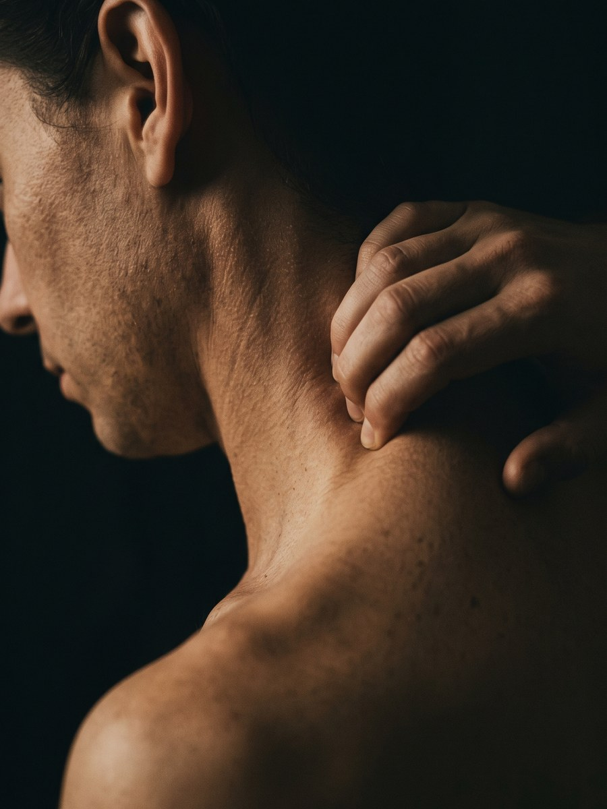
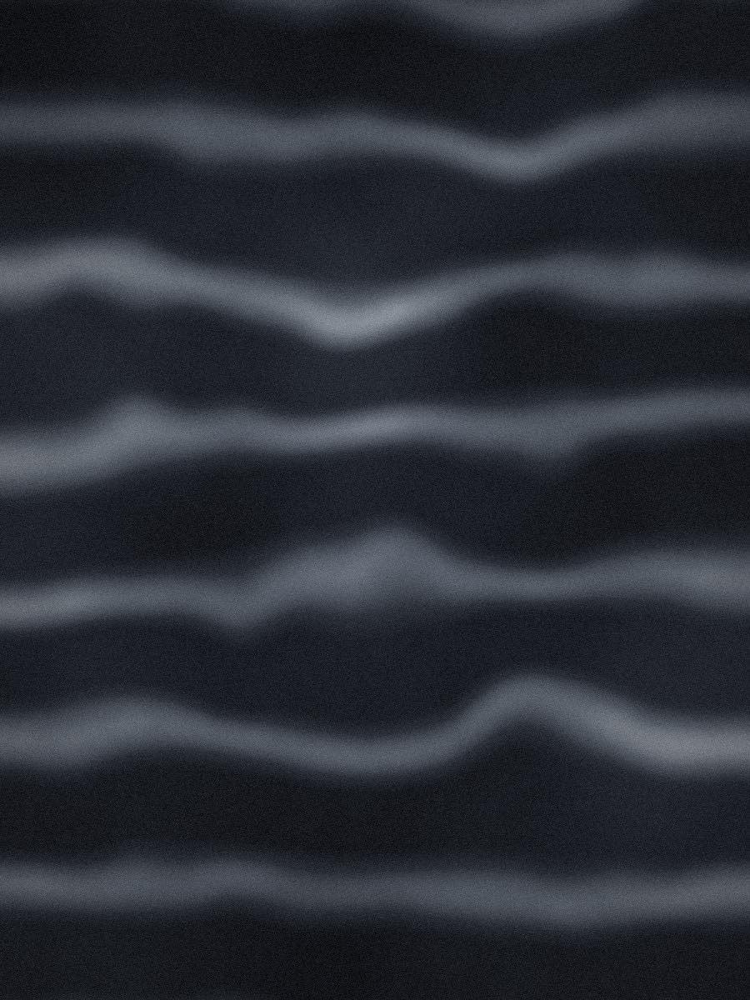
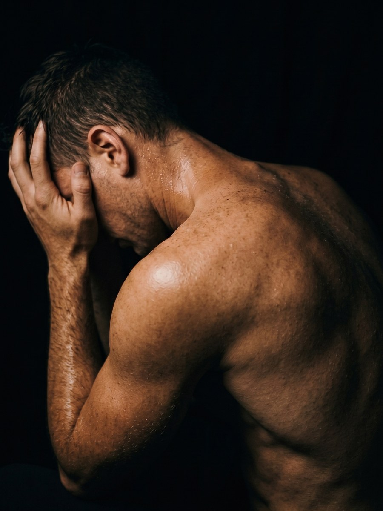
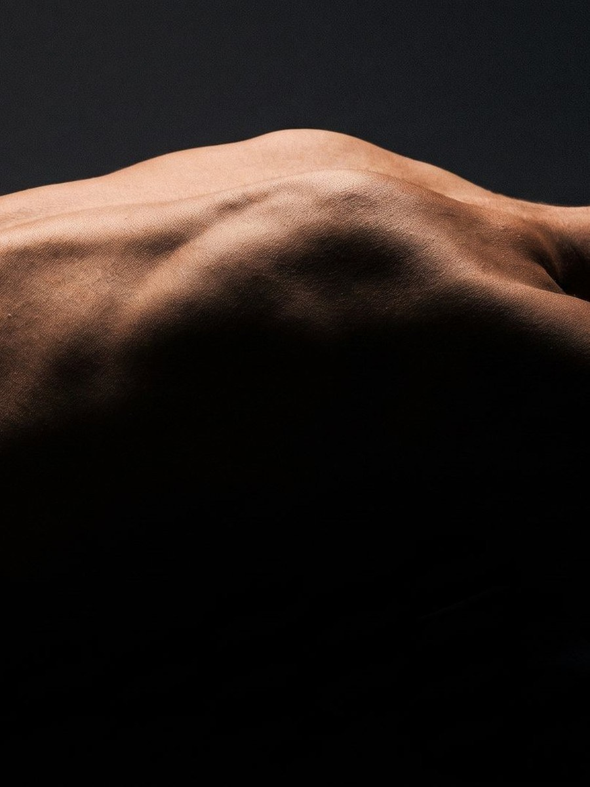
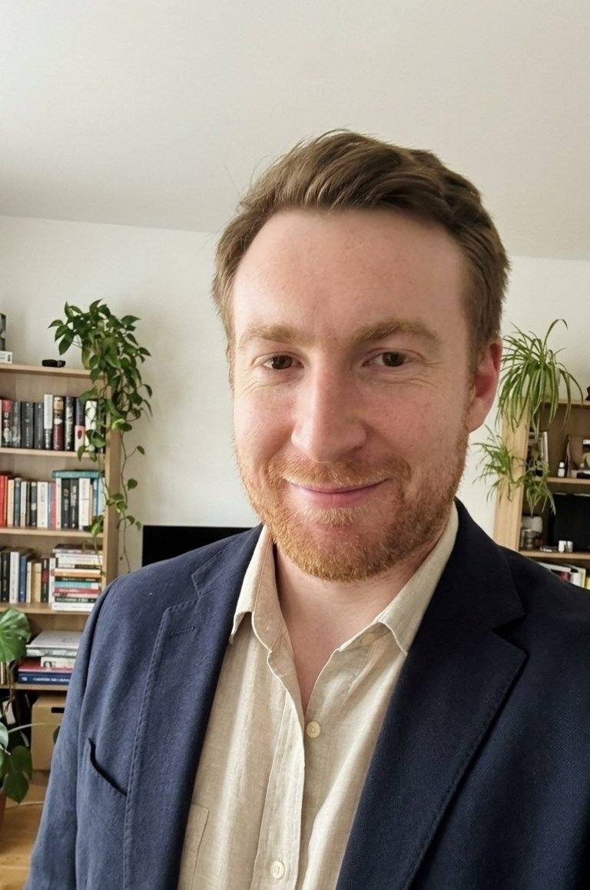

Боль и напряжение
Нахожу источник через диагностику биомеханики и снимаю его точной глубокой работой, а не общим массажем.
Индивидуальные сессии · Владикавказ
Персональный массаж и работа с телом во Владикавказе: снимаю боль и напряжение через биомеханику, возвращаю покой и энергию через глубокие телесные техники.
«Сначала тело. За ним и всё остальное.»
Тело и нервная система работают как одно целое. Я снимаю физическую боль и напряжение через точную работу с биомеханикой и мышцами. И возвращаю состояние покоя и энергии через глубокие расслабляющие техники.
Четыре самых частых запроса. Если узнали свой — с ним уже можно работать.

Нахожу источник через диагностику биомеханики и снимаю его точной глубокой работой, а не общим массажем.

Часы в одной позе фиксируют суставы и мышцы. Возвращаю телу подвижность и мягкость.

Медленные глубокие техники переключают нервную систему из режима защиты в режим восстановления.

Врачи разводят руками: снимки чистые, диагноза нет. Причина почти всегда в мышцах и фасции — нахожу её руками.
Четыре этапа, собранные под состояние вашего тела в конкретный день.
Оценка биомеханики, осанки и зон напряжения. Точная карта тела перед началом работы.
Триггерная терапия, глубокатканное воздействие, растяжка, перкуссионная терапия. Работа с причиной, а не с симптомом.
Lomi-Lomi и Палсинг. Нервная система переключается из режима защиты в режим восстановления.
Индивидуальные упражнения на силу и подвижность, чтобы результат остался с вами надолго.
Каждая сессия во Владикавказе собирается индивидуально: метод подбирается под состояние вашего тела в конкретный день.

Я Олег, специалист по комплексной работе с телом со стажем 8 лет. Современная медицина великолепно лечит болезни, но часто теряется там, где болит не орган, а целый человек: в хроническом напряжении, усталости, боли без чёткого диагноза. Я работаю именно здесь — соединяя глубокие традиционные практики (Lomi-Lomi, палсинг) с методами, подтверждёнными современной наукой (триггерная и перкуссионная терапия, функциональное движение). Не «массаж по зонам», а целостная работа с телом, нервной системой и привычками движения. Моя цель — вернуть вам тело, которое не требует ремонта.
Стаж 8 лет · 200+ сессий
Тело человека — не механизм из отдельных деталей, а цельная, взаимосвязанная система, где всё влияет на всё. Боль в пояснице может начинаться в стопе, головная боль — в мышцах челюсти, а хроническое напряжение в плечах — в нервной системе, которая годами живёт в режиме тревоги. Современная наука о фасции подтверждает то, что практики чувствовали руками столетиями: тело охвачено единой соединительнотканной сетью, и натяжение в одной её точке отзывается во всей системе. Поэтому я не «массирую спину» — я работаю с целым человеком.
Я глубоко уважаю академическую медицину: там, где нужна экстренная помощь, операция или точная фармакология, ей нет равных. Но у любой системы есть слепые зоны. Построенная по принципу «один орган — один специалист», современная медицина блестяще лечит болезни — и заметно хуже помогает человеку, который просто плохо себя чувствует в собственном теле. Хроническая боль в спине — первая причина утраты трудоспособности в мире, и The Lancet ещё в 2018 году признал: система слишком часто отвечает на неё снимками, таблетками и операциями там, где первой линией помощи должны быть движение, образование и работа руками. Ещё в 1977 году психиатр Джордж Энгел показал ограниченность чисто биомедицинской модели, а сегодня Международная ассоциация по изучению боли официально определяет боль как опыт, в котором всегда переплетены тело, психика и жизненные обстоятельства. Моя работа — в этом переплетении.
Я соединяю глубинные, проверенные временем практики — гавайское Lomi-Lomi, биодинамический палсинг — с тем, что сегодня подтверждают исследования: триггерной терапией, выросшей из работ Джанет Тревелл, аппаратной перкуссионной терапией и функциональным движением. Каждая техника в моём арсенале отвечает за свой контур: структуру, нервную систему или двигательное поведение. Искусство мастера — не владеть одним методом, а слышать, какой «инструмент» нужен телу именно сейчас, и собирать из них цельную партитуру.
Первый сеанс начинается с разговора и диагностики: я изучаю осанку, подвижность, историю боли и образ жизни — и только потом берусь за руки или аппарат. В программе могут сочетаться глубокая точечная работа и мягкое покачивание, перкуссия и дыхание — тело само подсказывает маршрут. А функциональные упражнения, которые вы забираете с собой, превращают эффект сеанса в устойчивое изменение. Моя цель — не сделать вас вечным клиентом, а вернуть вам тело, которое не требует ремонта.
«Спина перестала ныть уже после второй сессии. Через месяц впервые за несколько лет сижу за компьютером без подушки под поясницу.»
«Головные боли ушли вместе с зажимом в шее. Олег нашёл триггерные точки, о которых я даже не подозревала.»
«Плечо, которое почти не поднималось полгода, вернулось к жизни за три встречи. Очень точная и аккуратная работа.»
«Пришёл с коленом, которое не давало бегать. Через месяц после курса пробежал первые десять километров за год.»
«После родов спина разваливалась от ребёнка на руках. Олег показал, как носить малыша, чтобы не убивать поясницу.»
«Думал, онемение в руке — это навсегда. Оказалось, дело в шее. Три сессии — и пальцы снова мои.»
«К вечеру плечи сами собой поднимались к ушам. Теперь замечаю это и отпускаю вниз — этому тоже научили.»
«Сам работаю с телом и руки мастера чувствую сразу. Олег не повторяется: каждая сессия собирается под то, что он находит сегодня.»
«Десять лет за рулём, шея крутилась через раз. Теперь поворачиваюсь назад без акробатики всем корпусом.»
«Lomi-Lomi — странно и прекрасно. Вышла с ощущением, что меня собрали заново. Уснула в тот вечер впервые за год без телефона в руке.»
«В моём возрасте чудес уже не ждёшь. Но просыпаться без скованности в спине, оказывается, можно.»
«Пришла с тревожностью и комком в груди. Палсинг — будто тело вспомнило, что такое спокойствие.»
Цена за результат и время мастера, а не за «массаж спины». Сессии проходят во Владикавказе, в салоне «Филин» — Вишневый Сад, ул. Рябинова 1.
Разговор, карта тела, первая работа и план под ваш запрос
2 часа 4 000 ₽Полная индивидуальная работа под состояние тела в конкретный день
90 минут 5 500 ₽Расширенный день: глубокие техники плюс Lomi-Lomi или палсинг
2.5 часа 9 000 ₽Устойчивый результат: работа с причиной, а не с симптомом. Назначается после диагностики
6 недель 27 000 ₽Честные ответы на то, что спрашивают чаще всего. Без маркетинга и мелкого шрифта.
Не смогу, даже если захочу — я сам себе закрыл эту возможность. Курс у меня нельзя купить: нет кнопки «оплатить», нет абонементов, нет «выгодных пакетов». Его можно только получить как назначение после диагностической сессии — вместе с планом по неделям. И знаете, что самое интересное? Примерно в половине случаев после диагностики я говорю: «Курс вам не нужен, хватит двух встреч». Это не альтруизм, это арифметика: человек, которому я сэкономил двадцать тысяч, приводит троих друзей. А человек, которому продали лишнее, просто молчит.
По той же причине, по которой хороший врач не назначает лечение по телефону. Курс — это программа, а программа без диагностики — гадание: неизвестно ни с чем работать, ни сколько понадобится. А вот «попробовать» — можно и нужно: диагностическая сессия для этого и существует. Два часа, полноценная первая работа, честный разговор о том, что я нашёл, — и ноль обязательств. После неё вы сами почувствуете, ваше это или нет.
Проверьте меня — прямо на первой встрече. Попросите после диагностики назвать не план, а минимум: «Что самое малое, с чего можно начать?» — и послушайте ответ. Второй маркер: я всегда называю критерий результата на старте. Не «поделаем — посмотрим», а конкретно: «через три сессии вы должны просыпаться без этой боли; если нет — мы пересматриваем план или я говорю, что это не моё». Назначать лишнее при такой системе просто невозможно: всё сверяется по фактам, а не по ощущениям.
Отлично, я тоже не люблю терпеливых — они молчат и терпят, а это мешает мне работать. Правило простое: давление — до «приятной боли», той самой, от которой хочется дышать глубже, а не стискивать зубы. Если вы задержали дыхание — я уже перестарался, скажите мне об этом. Тело нельзя обмануть силой: мышца, на которую давят через боль, включает защитный спазм и борется с моими руками. Глубокая работа ощутима — но это ощущение «отпускает», а не «терпи».
Отвечу честно, по пунктам, без общих фраз «надо проконсультироваться»:
Если сомневаетесь — просто напишите мне до записи. Я лучше потеряю клиента, чем наврежу человеку: и то и другое потом возвращается, только в разной валюте.
Салон делает массаж зоны: спина, шея, ноги, час — до свидания. Я работаю с системой: сначала диагностика, потом поиск того звена, которое запускает вашу боль (а оно почти никогда не там, где болит), потом план и домашняя работа, чтобы результат не ушёл через неделю. К салонам я отношусь с уважением — если вам нужен просто хороший расслабляющий массаж, я честно подскажу, где его делают. Моя работа начинается там, где нужен результат, а не процедура.
Не удивлён — половина моих клиентов приходит с этой фразой. Почти всегда история одна и та же: массировали то, что болит. Спину. Шею. Ещё раз спину. А болит спина, например, из-за «спящих» ягодиц и укороченных сгибателей бедра — и пока их не включить, поясница будет мстить после каждого сеанса облегчения. Вторая причина: без движения и упражнений эффект любого массажа живёт неделю — тело возвращается к привычному паттерну. Чем будет иначе: я ищу причину, а не глажу симптом, и даю телу новую механику, а не временное послабление.
Скажу то, что не скажет никто, кто обещает «гарантию 100%»: гарантий в работе с телом не существует, и кто их даёт — врёт. Что я могу гарантировать — честность на каждом шаге. На диагностике вы услышите прогноз: «решаемо за столько-то» или «это не моя зона». На третьей сессии — сверку: есть динамика или нет. И если динамики нет — вы узнаете это от меня раньше, чем успеете подумать сами. Я лучше потеряю клиента на честном «не помогло», чем заработаю на его надежде.
Зависит от того, сколько лет проблема копилась. Свежая, острая ситуация — обычно 1–3 встречи. Хроника, которая живёт с вами годами, — курс из шести: это не цифра из прайса, это время, за которое ткани и нервная система успевают перестроиться. Дальше — поддержка раз в месяц-полтора, но только если вам самим хочется. Моя цель звучит странно для человека, который на этом зарабатывает: сделать так, чтобы я стал вам не нужен. Именно поэтому каждый клиент уходит с домашними упражнениями.
Нет. Я не ставлю диагнозы, не лечу болезни и не отменяю назначений врача — и это принципиальная граница, а не оговорка мелким шрифтом. У медицины и моей работы разные зоны: её поле — болезни, снимки, лекарства, операции; моё — мышцы, фасция, движение и нервная система, зажатая в режиме тревоги. Мы не конкуренты: я усиливаю медицину именно там, где она слабее всего, — в хронической мышечной боли и последствиях стресса. И если на диагностике я вижу «красные флаги» — травму, неврологию, что-то необычное, — первое, что вы от меня услышите: «Вам к врачу. Вот к какому и вот с чем».
Неловко — это нормально, все приходят с этим чувством. Поэтому расскажу всё по минутам. Первые 20–30 минут мы просто разговариваем: что болит, когда началось, как вы живёте, сидите, спите, двигаетесь. Затем диагностика: осанка, движение, дыхание, поиск триггерных точек — всё с объяснениями, что я делаю и зачем. Потом первая работа — не «ознакомительная помазка», а полноценная. И в конце — карта вашего тела и план: что происходит, откуда болит и что с этим делать. Уйдёте вы не с рецептом и не с абонементом, а с пониманием собственного тела. Оно, между прочим, уже стоит этих двух часов.
Ничего готовить не нужно — вы не на экзамен. Наденьте удобную одежду, не приходите сразу после плотного обеда, и если под рукой есть снимки МРТ или заключения врачей — захватите: не для того, чтобы «поставить диагноз по снимку», а для полноты картины. Всё остальное — масла, полотенца, атмосфера — на мне. Приходите как есть: тело я буду слушать в любом случае внимательнее, чем его хозяин успеет волноваться.
Можно. Нужно. И вы будете удивлены, как много людей приходит именно так: ничего не болит, но «усталость стала фоном», сон не восстанавливает, плечи живут у ушей. Для этого у меня есть мягкие форматы — Lomi-Lomi, палсинг, «Глубокая программа» на два с половиной часа: перезагрузка, после которой мир замедляется. Тело ведь как машина: можно приезжать в сервис, когда задымил мотор, — а можно на обслуживание. Второе честнее и дешевле.